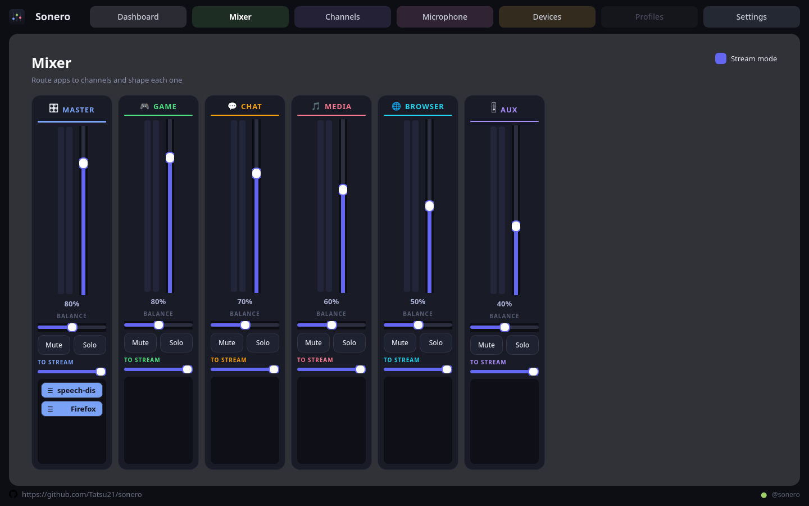
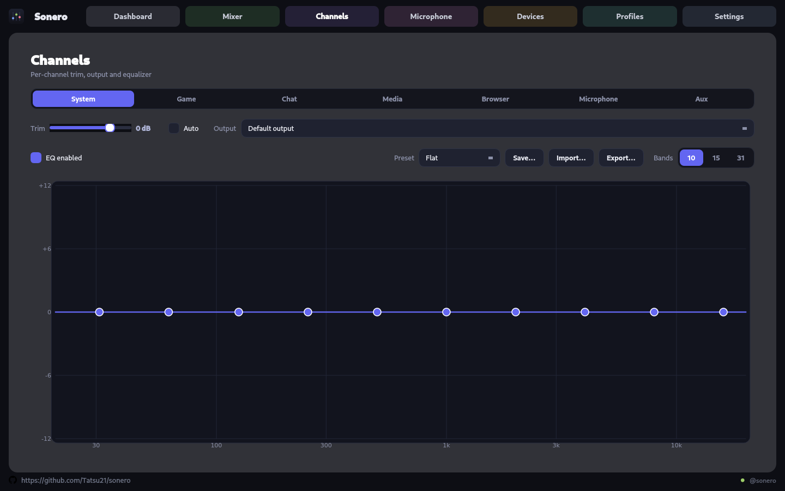

What it does
One mixer for every application you run
Sonero creates a set of virtual sound cards on PipeWire and lets you send each application to whichever one you like — then shapes each one separately.
Six output channels
System (master), Game, Chat, Media, Browser and Aux — volume, mute, solo, balance and live VU meters on each.
App routing that sticks
Every playing application shows up as a chip. Move it to a channel and it stays there across restarts.
Equalizer per channel
10, 15 or 31 bands with 24 built-in presets, plus save, import and export of your own curves.
Automatic gain
On request, it holds the highest gain — up to +6 dB — that keeps the channel clear of full scale. Slow up, immediate down, so nothing breathes.
Every output, equally
USB, Bluetooth, HDMI, S/PDIF and onboard analog are all detected and routable — and two channels can play to two different devices at once.
Battery where it exists
Bluetooth headsets through BlueZ, and the SteelSeries Arctis Nova Pro Wireless straight from its base station over USB HID — both shown in the tray.
Streaming mix for OBS
A Sonero Stream source with an independent send level per channel,
so your viewers hear a different balance than you do.
Virtual microphone
PartialA Sonero Microphone source your apps can select like any other.
Recording works today; the gain, mute and level controls are laid out but not yet
wired, and the app greys them out.
A real desktop app
Tray icon with device battery and a compact volume window, notifications, autostart at login, and background operation so channels stay alive.
Equalizer
It runs in software, so it works with any headset
Every channel is a cascade of peaking biquads — nothing has to be blessed by a hardware vendor. Drag the curve or the per-band sliders; 10, 15 or 31 bands, with presets you can save and share.
Gain staging is deliberate: volume × channel gain × EQ headroom × a fixed filter reserve, so a boosted band cannot clip on the way to the device.

Install
Pick the file for your distribution
Every release carries all of these. Pushes to main also
refresh a dev prerelease, if you would rather run what is being worked on.
| File | For |
|---|---|
Sonero-<version>-x86_64.AppImage |
Take this one. Portable, carries its own Qt, built on the oldest glibc so it runs almost anywhere. |
sonero_<version>-ubuntu2204_amd64.deb |
Ubuntu 22.04, Linux Mint 21.x |
sonero_<version>-ubuntu2404_amd64.deb |
Ubuntu 24.04, Linux Mint 22.x |
Sonero-<version>-arch-x86_64.AppImage |
Arch, or a distribution at least as new |
Sonero-<version>-fedora-x86_64.AppImage |
Fedora, or a distribution at least as new |
# needs FUSE 2, or --appimage-extract-and-run
chmod +x Sonero-*-x86_64.AppImage
./Sonero-*-x86_64.AppImage
# apt pulls in Qt and installs the udev rule
sudo apt install ./sonero_*-ubuntu2204_amd64.deb
# the nicer route on Arch and Fedora
cmake -S . -B build -G Ninja \
-DCMAKE_BUILD_TYPE=Release
cmake --build build --parallel
./build/Sonero
The AppImage adds itself to your application menu on first run — and deletes the bundle it replaces, so old versions do not pile up in your downloads folder. On GNOME the tray icon needs the AppIndicator extension.
Honest status
What is not finished
These are visible in the app but greyed out and labelled, rather than left looking clickable. Nothing here pretends to work.
- Profiles — saving whole configurations as named profiles is not implemented.
- Microphone controls — the source is live and apps can record from it, but gain, mute, level, noise suppression, gate and monitoring are inert. The DSP behind them is not wired.
- SteelSeries hardware EQ — the dock accepts the HID writes and nothing audible changes. Unsolved, so the card is disabled; the per-channel equalizer runs in software and works with any headset.
- LDAC is untested. The codec picker ranks it highest, but none of the headsets on hand offers it, so that path has never run on real hardware.
Requirements
Nothing exotic
| Component | Minimum | Notes |
|---|---|---|
| PipeWire | 0.3 | Plus WirePlumber as the session manager. Already running on every current desktop. |
| Qt | 6.2 | Widgets, D-Bus and Network. The AppImage carries its own. |
| CPU | x86-64 | The DSP is a handful of biquads per channel. |